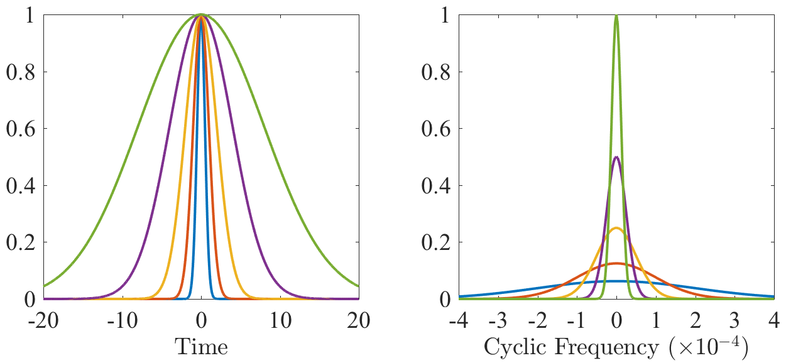

name: timevsfrequency class: center,middle, .toc[[✧](../index.html)] .title[The Two Domains] --- class: left, .toc[[✧](../index.html)] #One Object, Two Domains In the last lecture we saw that any time series can be represented in terms of its Fourier transform. The time series and its Fourier transform are linked, like the way an object is linked to its mirror image. We can say that we are seeing the same object, represented in either the time domain, or the frequency domain. Any modification we make to a time series will have will also modify in some way its Fourier transform. In other words, changes in the time domain are reflected by corresponding changes in the frequency domain, and vice-versa. --- class: left, .toc[[✧](../index.html)] #The Nature of the Link However, the nature of the link between the time domain and the frequency domain is rather subtle. The way a modification in one domain is represented in the other domain is not initially obvious. For example, if we differentiate a time series with respect to time, that is not the same as differentiating its Fourier transform with respect to frequency. Similarly, if you hold an object in front of a mirror, the mirror accurately represents the object, but in a modified way. As you rotate the object, the mirror image also rotates, but in the opposite direction. Understanding the way these two domains reflect each other is at the very heart of spectral analysis and is the subject of this lecture. --- class: left, .toc[[✧](../index.html)] # Orientation In the last few lectures we have established three fundamental building blocks for understanding Fourier analysis. These are the sampling model, Euler's Formula, and the discrete Fourier transform equations: `\[ z_n = z(n \Delta)\\ e^{i\omega t}=\cos(\omega t)+i \sin(\omega t)\\ z_n=\frac{1}{N}\sum_{m=0}^{N-1} Z_m e^{i2\pi m n/N},\quad\quad\quad Z_m \equiv \sum_{n=0}^{N-1}z_n e^{-i2\pi m n/N}. \]` -- Today we will add a fourth building block, `\begin{equation} z(t) =\frac{1}{2\pi} \int_{-\infty}^{\infty} Z(\omega)\, e^{i\omega t} d\omega,\quad\quad Z(\omega)\equiv \int_{-\infty}^{\infty} z(t)\, e^{-i\omega t} d t \end{equation}` which are the continuous Fourier transform equations. <!--But note, we will have to take care of what `$z(t)$` is allowed to be in this case.--> --- class: left, .toc[[✧](../index.html)] # Limiting Cases Before continuing, we consider some limiting cases of our conceptual model. Beginning with the sampling model `\[ z_n \equiv z(\Delta n),\quad\quad n=0,1,\ldots,N-1 \]` with `$T\equiv N\Delta $` being the signal duration, and recalling the Rayleigh and Nyquist frequencies `\[f^\mathcal{R} \equiv \frac{1}{N\Delta},\quad\quad\quad f^\mathcal{N}\equiv \frac{1}{2\Delta}\]` consider the following: What happens as `$N$` tends to infinity with `$\Delta$` held fixed? -- What happens as `$N$` tends to infinity with `$T$` held fixed? <!--Draw what the sampling looks like in both cases.--> <!--class: left, .toc[[✧](../index.html)] # In-Class Assignments 1. Make an `$N=1000$` point array of zeros, place a 100-point boxcar (100 ones) at its center, and plot the real and imaginary parts, and absolute value, of its FFT. What do you observe? 2. Repeat #1 but with the boxcar located in the first 100 points, not the center. What changes? 3. Repeat #1 but with a 200-point boxcar. What changes? 4. Repeat #3 but after multiplying the signal by `$\exp(i 2\pi n/20)$` with `n=[1:1000]`. What changes?--> <!--1. Using <tt>conv</tt>, convolve two 5-point boxcar functions with each other. That is, two 5-point sequences with a value of 1/5.--> <!--2. Filter the series you originally made in step 1 with another 101-point boxcar (not embedded in zeros) using <tt>vfilt</tt> with the ‘mirror’ setting, and compute its fft. What changes?--> <!-- 3. Take the fft of the result. --> <!-- 4. Compare this with the squared fft of the original unfiltered sequence.--> <!--5. Take your time series, or the m1244 time series if you have not yet taken the spectrum of your own. Multiply it by a boxcar 1/2 the length of your time series, and centered at the center of your time series. That is, set the first and last quarters of your time series to zero. Compute the multi-taper spectrum as in the example and compare. What changes?--> <!--1. Decimate your time series to every second point and take the spectrum. What changes? Do the same but every fourth point. --> <!-- class: left, .toc[[✧](../index.html)] # In-Class Assignments 1. Compute the Nyquist and Rayleigh frequency for your data. 1. Take the DFT of your data, and plots its *magnitude square*. Draw a vertical line at the Nyquist using <tt>vlines(fN)</tt>. 1. Replot the squared Fourier transform using <tt>fftshift</tt>. 3. Shift your data using <tt>circshift</tt> say 1/4 of the length of the time series. Plot this so you see what it is doing. Does the magnitude squared Fourier transform change? 3. Run <tt>[f,S]=mspec(dt,x,[])</tt> on your data where `$dt$` is the sample rate and plot it. Does this agree with step 2? 1. Use <tt>xlog</tt>, <tt>ylog</tt>, <tt>xlin</tt>, <tt>ylin</tt> to toggle between linear and log axes, and choose the combination of linear and log axes that seems most interesting. 4. Run <tt>psi=sleptap(length(x),M);</tt> followed by <tt>[f,S]=mspec(dt,x,psi)</tt> for `$M=4,8$,` and 16. Plot these on the same plots as in the previous step. 5. If you have complex-valued data, use <tt>[f,Sp,Sn]=mspec(...)</tt> and plot both `$Sp$` and `$Sn$` in the previous two steps.--> <!--6. Add a large mean value due to your data and repeat the computation of the spectra. What does this do? --> --- class: left, .toc[[✧](../index.html)] # A Deterministic Signal Let `$g_n$` denote a discrete time series that is a sampled version of the continous time series `$g(t)$`: `\[ g_n = g(n \Delta)\]` Like `$z(t)$`, `$g(t)$` may be complex-valued, but unlike `$z(t)$`, `$g(t)$` is a deterministic (not stochastic) time series. This means that `$g(t)$` has a definite value at each time `$t$`, whereas `$z(t)$` is a random variable at each time `$t$`. Also unlike `$z(t)$`, `$g(t)$` does not present variability that goes on and on forever into the past and the future. One example of such a time series `$g(t)$` is a Gaussian curve. The reason for working with the deterministic time series `$g(t)$` will become clear shortly. --- class: left, .toc[[✧](../index.html)] # Continuous Fourier Today we will discuss the Fourier transform equations for a deterministic time series `$g(t)$` that is a function of *continuous* time: `\begin{equation} g(t) =\frac{1}{2\pi} \int_{-\infty}^{\infty} G(\omega)\, e^{i\omega t} d\omega,\quad\quad G(\omega)\equiv \int_{-\infty}^{\infty} g(t)\, e^{-i\omega t} d t. \end{equation}` These may be compared with the Fourier transform equations for a *discrete* time series `$g_n$` that we have been working with. `\[g_n=\frac{1}{N}\sum_{m=0}^{N-1} G_m e^{i2\pi m n/N},\quad\quad\quad G_m \equiv \sum_{n=0}^{N-1}g_n e^{-i2\pi m n/N} \]` Please take a few minutes to look closely at these two equations. Assess their commonality and differences. -- These are discrete and continuous expressions of the same basic idea of representing a time series in terms of sinuosoids. Differences: sum vs. integral, cyclic vs. radian, `$1/N$` vs. `$1/(2\pi)$`. --- class: left, .toc[[✧](../index.html)] #Why Both? A fair question is why we need to work with both the discrete Fourier transform and continuous Fourier transform. Essential conceptual results are much easier to see when we work with the continuous version, even if the basic idea also applies to the discrete version. These continuous Fourer transform equations are the key to understanding the link between the time domain and the frequency domain, and to understanding spectral analysis. However, when we implement things on a computer, we do so using the discrete version. Therefore it is important to be familiar with both. --- class: left, .toc[[✧](../index.html)] #Discrete vs. Continuous <!--Let's take a closer look at the relationship between the discrete and continuous equations. --> Note we can express the `$m$`th Fourier frequency equivalently as `\[f_m \equiv m/N, \quad\quad \omega_m\equiv 2\pi m/N\]` in terms of either cyclic or radian frequencies. The difference between two successive radian frequencies is `\[\delta\omega\equiv \omega_{m+1}-\omega_m = 2\pi/N\]` which is just the Rayleigh frequency expressed in radian units. Thus, we can write the discrete Fourier transform as `\[ g_n = \frac{1}{N}\sum_{m=0}^{N-1} G_m e^{i2\pi n f_m} = \frac{1}{N\delta\omega}\sum_{m=0}^{N-1}G_m e^{i\omega_m n} \delta\omega = \frac{1}{2\pi}\sum_{m=0}^{N-1} G_m e^{i\omega_m n} \delta\omega \]` in which form we can better see its connection to the integral. --- class: left, .toc[[✧](../index.html)] #Discrete vs. Continuous Rewritten in cyclic frequency, the DFT equations become `\[g_n=\frac{1}{2\pi}\sum_{m=0}^{N-1} G_m e^{i\omega_m n} \delta\omega,\quad\quad\quad G_m \equiv \sum_{n=0}^{N-1}g_n e^{-i \omega_m n}. \]` The left-hand expression is clearly a summation approximating an integral over frequency. The right hand expression is a summation approximating an integral over time, with sample interval `$\Delta =1$.` Comparing these with the continuous Fourier transform equations `\begin{equation} g(t) =\frac{1}{2\pi} \int_{-\infty}^{\infty} G(\omega)\, e^{i\omega t} d\omega,\quad\quad G(\omega)\equiv \int_{-\infty}^{\infty} g(t)\, e^{-i\omega t} d t \end{equation}` we can now see the very close connection between the two sets. Note that the placement of the `$2\pi$` is subject to convention. This argument shows why it is natural to have the `$2\pi$` where it is. --- class: left, .toc[[✧](../index.html)] # A Symmetric DFT Form The inverse discrete Fourier transform, with `$f_m\equiv m/N$`, `\begin{equation}g_n=\frac{1}{N}\sum_{m=0}^{N-1} G_m e^{i2\pi n f_m} \end{equation}` can be written in the symmetric form `\begin{eqnarray} g_n&=& \frac{1}{N}\sum_{m=-(N/2-1)}^{N/2-1} G_m e^{i2\pi n f_m} + G_{N/2} (-1)^n & \quad\quad N~\mathrm{even}\\ g_n&=& \frac{1}{N}\sum_{m=-(N-1)/2}^{(N-1)/2} G_m e^{i2\pi n f_m} & \quad\quad N~\mathrm{odd} \end{eqnarray}` where we *define* `$G_m$` with `$m<0$` as `$G_{m}\equiv G_{N-m}$` in the latter two summations. Note the summations are now symmetric in `$m$`. --- class: left, .toc[[✧](../index.html)] # Limiting Forms of the DFT Consider the case of odd `$N$` for simplicity, we can now see the close connections between the discrete and continuous cases: `\begin{equation} g_n= \frac{1}{2\pi}\sum_{m=-(N-1)/2}^{(N-1)/2} G_m e^{i \omega_m n} \delta\omega, \quad\quad g(t) =\frac{1}{2\pi} \int_{-\infty}^{\infty} G(\omega)\, e^{i\omega t} d\omega \end{equation}` It can be shown that the continuous Fourier transform emerges from the DFT as (i) `$T\equiv N\Delta \longrightarrow \infty$` together with (ii) `$\Delta \longrightarrow 0$`. <!--\lim_{N\longrightarrow \infty }--> --- class: left, .toc[[✧](../index.html)] # Note on Transform Validity Let's take a look at this equation: `\[ G(\omega)\equiv \int_{-\infty}^{\infty} g(t)\, e^{-i\omega t} d t.\]` Some conditions must be placed on `$g(t)$` in order for this to be valid. <!-- for `$\sum_{p=-\infty}^\infty z(t_p)\, e^{-i\omega t_p} \delta t $` to have a valid limit as `$\delta t\longrightarrow 0$`.--> If we assume that `$g(t)$` and `$G(\omega)$` are both *absolutely integrable* `\begin{equation} \int_{-\infty}^{\infty} | g(t) | \, dt<\infty,\quad\quad\quad \int_{-\infty}^{\infty} |G(\omega)|\, d \omega <\infty \end{equation}` then it can be shown that the Fourier transform equations hold, and `$g(t)$` can be reconstructed`$^*$` from its Fourier transform. The Fourier transform does not exist in this usual sense for, e.g., a stochastic process `$z(t)$` that extends to infinity in both directions. (`$^*$` In the sense of being equal almost everywhere.) --- class: left, .toc[[✧](../index.html)] # A Simplifying Notation We introduce the notation `\[A(t) \Longleftrightarrow B(\omega) \]` to mean "A is a Fourier transform pair with B". In other words, `$A(t) \Longleftrightarrow B(\omega) $` means *both* of the two equations `\begin{equation} A(t) =\frac{1}{2\pi} \int_{-\infty}^{\infty} B(\omega)\, e^{i\omega t} d\omega,\quad\quad B(\omega)= \int_{-\infty}^{\infty} A(t)\, e^{-i\omega t} d t. \end{equation}` We will always put time-domain quantity on the left, and the frequency-domain quantity on the right. --- class: left, .toc[[✧](../index.html)] # Transform of a Gaussian It can readily be shown that a Gaussian transforms to a Gaussian: `\[g(t) = e^{-\frac{1}{2}\frac{t^2}{L^2}}\quad\Longleftrightarrow\quad G(\omega) = \sqrt{2\pi}\,L\, e^{-\frac{1}{2}L^2\omega^2} .\]` Notice that the Gaussian width in the time domain, `$L$`, becomes `$1/L$` in the frequency domain. This means that as you make the Gaussian *more narrow* in time, it becomes *more broad* in the frequency domain, and vice-versa. This is actually a general result. --- class: left, .toc[[✧](../index.html)] #The Scaling Theorem Using the inverse Fourier transform equation, if you scale time in a function `$g(t)$`, what happens to its Fourier transform? `\begin{equation} g(t) =\frac{1}{2\pi} \int_{-\infty}^{\infty} G(\omega)\, e^{i\omega t} d\omega \end{equation}` -- `\begin{multline} g(t/L) =\frac{1}{2\pi} \int_{-\infty}^{\infty} G(\omega)\, e^{i\omega t/L} d\omega =\frac{1}{2\pi} \int_{-\infty}^{\infty} L \,G(\omega)\, e^{i(\omega/L) t} d(\omega/L) \\\left(\mathrm{with~}\nu\equiv \omega/L\mathrm{~followed~by~\omega\equiv\nu}\right)\quad\quad=\frac{1}{2\pi} \int_{-\infty}^{\infty} L\,G(\omega L) \, e^{i \omega t} d\omega \end{multline}` This is a general result that we will call the *scaling theorem*: `\[g(t/L) \quad \Longleftrightarrow\quad L\, G(L\omega) .\]` This states that making any function *more narrow* in the time domain makes its Fourier transform *more broad*, and vice-versa. <!--`\[\tilde z(t) \equiv z(t/L) =\frac{1}{2\pi} \int_{-\infty}^{\infty} Z(\omega)\, e^{i\omega t /L} d \omega=\frac{1}{2\pi} \int_{-\infty}^{\infty} Z(L \omega/L)\, e^{i(\omega/L) t } L d \omega/L = \frac{1}{2\pi} \int_{-\infty}^{\infty} L Z(L \omega)\, e^{i(\omega) t } L d \omega\]`--> <!--The scaling theorem is readily proved from the Fourier transform equations using a change of variables.--> --- class: center, .toc[[✧](../index.html)] # The Scaling Theorem  Stretching a function in time compresses it in frequency, and also increases the frequency-domain amplitude. `\[g(t/L) \quad \Longleftrightarrow\quad L G(L\omega) .\]` --- class: left, .toc[[✧](../index.html)] # The Shift Theorem Using the inverse Fourier transform equation, if you shift a function `$z(t)$` in time, what happens to its Fourier transform? `\begin{equation} g(t) =\frac{1}{2\pi} \int_{-\infty}^{\infty} G(\omega)\, e^{i\omega t} d\omega \end{equation}` -- `\begin{multline} g(t-t_o) = \frac{1}{2\pi} \int_{-\infty}^{\infty} G(\omega)\, e^{i\omega (t-t_o) } d \omega = \frac{1}{2\pi} \int_{-\infty}^{\infty} \left[ e^{-i\omega t_o } G(\omega) \right] e^{i\omega t } d \omega \end{multline}` Thus, the effect in Fourier domain of a time shift is to *modify the phases* of the Fourier transform without changing its magnitude. Such an action is called a *phase modulation*. The word *modulate* means to adjust or vary. This result, the *shift theorem*, can be compactly expressed as `\begin{equation} g(t-t_o) \quad\Longleftrightarrow\quad e^{-i\omega t_o } G(\omega). \end{equation}` --- class: left, .toc[[✧](../index.html)] # Time Derivatives Using the inverse Fourier transform equation, if you take a time derivative of `$g(t)$`, what happens to its Fourier transform? `\begin{equation} g(t) =\frac{1}{2\pi} \int_{-\infty}^{\infty} G(\omega)\, e^{i\omega t} d\omega \end{equation}` -- `\begin{multline} g'(t)=\frac{d}{dt} g(t) = \frac{d}{dt}\left[\frac{1}{2\pi} \int_{-\infty}^{\infty} G(\omega)\, e^{i\omega t } d \omega \right]\\=\frac{1}{2\pi} \int_{-\infty}^{\infty} G(\omega)\,\left[\frac{d}{dt} e^{i\omega t }\right] d \omega = \frac{1}{2\pi} \int_{-\infty}^{\infty} i \omega G(\omega) \, e^{i\omega t } d \omega \end{multline}` We will call this result the *differentiation theorem*: `\begin{equation} g'(t) \quad\Longleftrightarrow\quad i \omega G(\omega). \end{equation}` Note that the differentiation theorem readily generalizes `\begin{equation} g^{(n)}(t) \quad\Longleftrightarrow\quad (i \omega)^n G(\omega). \end{equation}` --- class: left, .toc[[✧](../index.html)] # Summary So Far We have learned the scaling theorem, the shift theorem, and the differentiation theorem: `\begin{equation} g(t/L) \quad \Longleftrightarrow\quad L\, G(L\omega)\\ g(t-t_o) \quad\Longleftrightarrow\quad e^{-i\omega t_o } G(\omega) \\ g'(t)\,\,\, \quad\Longleftrightarrow\quad i \omega G(\omega). \end{equation}` These three results are fundamental in describing how changes in the time domain are reflected in the frequency domain. All of these results are derivable with a few lines of algebra from the Fourier representation, or inverse Fourier transform equation, `\begin{equation} g(t) =\frac{1}{2\pi} \int_{-\infty}^{\infty} G(\omega)\, e^{i\omega t} d\omega. \end{equation}` After a while, you can just look at this equation and you can see those results inside of it. <!--class: left, .toc[[✧](../index.html)] # In-Class Assignments Beginning with the forward Fourier transform equation `\[G(\omega) = \int_{-\infty}^{\infty} g(t)\, e^{-i\omega t} dt\]` use this equation to answer the following: `\begin{align} ? \quad &\Longleftrightarrow\quad G(\omega/L)\\ ?\quad&\Longleftrightarrow\quad G(\omega-\omega_o) \\ ? \quad&\Longleftrightarrow\quad G'(\omega)\\ \end{align}`--> <!--class: left, .toc[[✧](../index.html)] # In-Class Assignments 1. Make an `$N=1000$` column vector of zeros, then set the first point in the time series equal to one, and plot the real part, imaginary part, and absolute value of its FFT. What do you observe? 1. Repeat #5 but setting a different point to have a value of one. What changes as you move that point around? 1. Let `n=[1:1000]'`, and let `$x=\cos(a n)$` be a cosine, then choose `$a$` such that `$x$` executes one oscillation in 50 time points. Plot the plot the real part, imaginary part, and absolute value of its FFT. What do you observe? 1. Repeat #3 but with a `$\sin$` instead. What changes? 1. Repeat #3 but after multiplying `$a$` by four. What changes?--> --- class: left, .toc[[✧](../index.html)] # The Delta Function The Dirac delta function, `$\delta(t)$`, is a special type of function that comes up frequently in Fourier analysis. One can visualize `$\delta(t)$` as an infinite spike at time `$t=0$`, but with an integated value of one, `$\int_{-\infty}^{\infty} \delta(t) \,dt =1$.` The fundamental property of a delta function is that its product with another function `$f(t)$` integrates to a particular value of `$f(t)$`: `\[ \int_{-\infty}^{\infty} \delta\left(t-t_o\right)\, f(t)\, dt = f(t_o). \]` Thus `$\delta\left(t-t_o\right)$` plays the role of *collapsing* the integral, *choosing* the value of `$f(t)$` at time `$t=t_o$`. An important detail is that `$f(t)$` must be “smooth” in some sense. It can't be a stochastic process like a random walk, or another delta function, or a fractal. These vary at infinitesimally small scales. --- class: left, .toc[[✧](../index.html)] # Delta Function Check Let's make sure we understand how the delta function works. Please answer the following: `\begin{align} \int_{-\infty}^{\infty} \delta\left(t-t_o\right)\, \cos(\omega t)\, dt &= ?\\ \int_{-\infty}^{\infty} \delta\left(t\right)\, \cos(\omega t)\, dt &= ?\\ \int_{-\infty}^{\infty} \delta\left(\omega-\omega_o\right) e^{i\omega t}\, d\omega &= ?\\ \frac{1}{2}\int_{-\infty}^{\infty}\left[ \delta\left(\omega-\omega_o\right) + \delta\left(\omega+\omega_o\right) \right]e^{i\omega t}\, d\omega &= ?\\ \frac{-i}{2}\int_{-\infty}^{\infty}\left[ \delta\left(\omega-\omega_o\right) - \delta\left(\omega+\omega_o\right) \right]e^{i\omega t}\, d\omega &= ? \end{align}` --- class: left, .toc[[✧](../index.html)] # Fourier Transform of Delta Setting `$G(\omega)=2\pi \delta(\omega)$` in the inverse Fourier transform leads to `\[ g(t) =\frac{1}{2\pi} \int_{-\infty}^{\infty} G(\omega)\, e^{i\omega t} \,d\omega,\quad\quad 1 = \frac{1}{2\pi}\int_{-\infty}^{\infty} 2\pi \delta(\omega) \, e^{i\omega t} d\omega \]` using the fundamental property of a delta function. This indicates that the corresponding forward Fourier transform should be `\[ 2\pi\delta(\omega) = \int_{-\infty}^{\infty} e^{-i\omega t} dt \]` and this can in fact be proven, but is beyond the scope of this class. <!-- We will take it as established.--> Thus we have identified the Fourier transform pair of a constant value in the time domain, and a delta function at zero frequency: `\[ 1\quad \Longleftrightarrow \quad 2\pi \delta(\omega). \]` You can see this as a special case of the Gaussian pair for `$L\rightarrow \infty$`. <!--The Fourier transform of a very *narrow* or *localized* function is a very *broad* or *distributed* function. Special case of scaling theorem!--> --- class: left, .toc[[✧](../index.html)] # Deltas and Sinuosoids Delta functions are important because *shifted* delta functions are the Fourier transforms of complex exponentials. From the fundamental property of a delta function, and setting `$G(\omega)=2\pi \delta(\omega-\omega_o)$` in the inverse Fourier transform, we have `\[ g(t) =\frac{1}{2\pi} \int_{-\infty}^{\infty} G(\omega)\, e^{i\omega t} d\omega,\quad e^{i\omega_o t} = \frac{1}{2\pi}\int_{-\infty}^{\infty} 2\pi \delta\left(\omega-\omega_o\right) e^{i\omega t} d\omega \]` for the Fourier transform of a shifted delta function, or `\[ e^{i\omega_o t}\quad \Longleftrightarrow \quad 2\pi \delta(\omega-\omega_o). \]` Recall that `$\cos \theta= \Re\left\{e^{i\theta}\right\}=\frac{1}{2}\left[e^{i\theta}+e^{-i\theta} \right]$`. It follows at once that `\[ \cos\left(\omega_o t\right)\quad \Longleftrightarrow \quad \pi\delta\left(\omega+\omega_o\right)+\pi\delta\left(\omega-\omega_o\right) \]` and the Fourier transform of a cosine is the sum of *two* delta functions, one at `$\omega_o$` and one at `$-\omega_o$`. <!--`\[ \cos\left(\omega_o t\right) = \frac{1}{2\pi}\int_{-\infty}^{\infty} \pi \left[\delta\left(\omega+\omega_o\right)+\delta\left(\omega-\omega_o\right)\right] e^{i\omega t} d\omega, \]` --> --- class: left, .toc[[✧](../index.html)] # But Wait ... I thought you said we have to work with functions that are absolutely integrable? Sines and cosines are not absolutely integrable because `\[ \int_{-\infty}^\infty |\cos(\omega t)| dt =\infty.\]` -- True. These are a special case. They can be treated as, say, a Gaussian times a cosine---which is absolutely integrable---in the limit as the Gaussian becomes infinitely wide. A special theory, called *the theory of distributions*, is needed to work with delta-functions, for example, to prove the fundamental property of delta functions. In general, we don't need to worry about this, just to be aware of it. --- class: left, .toc[[✧](../index.html)] # The Convolution Integral A few days ago we worked with simple smoothing of our discrete time series `$z_n$`, which we represented mathematically as `\[ \tilde z_n= \sum_{m=-(M-1)/2}^{(M-1)/2} z_{n-m} \,g_{m} \]` We might choose `$g_m$` to be constant, for example, to implement a running mean. Changing notation slightly, this becomes `\[ h_n\equiv \sum_{m=-(M-1)/2}^{(M-1)/2}f_{n-m} \,g_{m},\quad\quad h(t)\equiv \int_{-\infty}^{\infty} f(t-\tau) g(\tau)\, d\tau.\]` where we have written the continuous-time equivalent on the right. This is a very important type of operation called a *convolution*. --- class: left, .toc[[✧](../index.html)] #The Convolution “Convolution” is essentially just a fancy name for the filtering action we do when we smooth a time series or take a running mean. Let `$f(t)$` be a time series of interest, and `$g(t)$` be smoothing function, such as a boxcar. Then a smoothed version of `$f(t)$` is given by `\[ h(t)\equiv(f\ast g)(t)\equiv \int_{-\infty}^{\infty} f(\tau) g(t-\tau) d\tau\]` where the integral in the above is called a *convolution*. The notation `$(f\ast g)(t)$` is confusing but conventional. If `$g(t)$` is a rectangle function, the convolution produces a running mean. But in general, `$g(t)$` need not become smoother! We could apply, for example, bandpass filter. <!--The discrete version of a convolution is what we referred to as ‘simple smoothing’ earlier. --> As with the Fourier transform equation, for the convolution integral to be well-defined, we need to make some conditions on `$f(t)$` and `$g(t)$`. It is well-defined if both are square-integrable. --- class: center, .toc[[✧](../index.html)] #Example of Convolution <img style="width:100%" src="../figures/Convolution_of_box_signal_with_itself2.gif"> `\[ (f\ast g)(t) \equiv \int_{-\infty}^{\infty} f(\tau) g(t-\tau) d\tau \]` This [{animation}](https://commons.wikimedia.org/wiki/File:Convolution_of_box_signal_with_itself2.gif) is from Wikipedia, by Brian Amberg and modified by Tinos, redistributed under the [{CC BY-SA 3.0}](https://creativecommons.org/licenses/by-sa/3.0) license. --- class: center, .toc[[✧](../index.html)] #Another Example <img style="width:100%" src="../figures/Convolution_of_spiky_function_with_box2.gif"> `\[ (f\ast g)(t) \equiv \int_{-\infty}^{\infty} f(\tau) g(t-\tau) d\tau \]` This [{animation}](https://commons.wikimedia.org/wiki/File:Convolution_of_spiky_function_with_box2.gif) is from Wikipedia, by Brian Amberg and modified by Tinos, redistributed under the [{CC BY-SA 3.0}](https://creativecommons.org/licenses/by-sa/3.0) license. --- class: left, .toc[[✧](../index.html)] #Symmetry of Convolution In convolution, order does not matter. Convolving `$f(t)$` with `$g(t)$` is the same as convolving `$g(t)$` with `$f(t)$`. Define `$h(t)$` as `\[ h(t)\equiv \int_{-\infty}^{\infty} f(\tau) g(t-\tau) d\tau.\]` With `$u\equiv t-\tau$`, which implies `$du= -d\tau$` and `$\tau= t-u$`, we find `\[ h(t)= -\int_{\infty}^{-\infty} f(t-u) g(u) du = \int_{-\infty}^{\infty} f(t-u) g(u) du \]` after changing the limits of integration, i.e. noting `$\int_a^b = -\int_b^a$.` The variable of integration `$u$` can be replaced with with `$\tau$.` This shows `\[ h(t)\equiv \int_{-\infty}^{\infty} f(\tau) g(t-\tau) d\tau = \int_{-\infty}^{\infty} g(\tau) f(t-\tau) d\tau \]` so that in convolution, the *order does not matter*. <!-- `\[ \int_{-\infty}^{\infty} f(t-\tau) g(\tau)\, d\tau= \int_{-\infty}^{\infty} f(\tau) g(t-\tau)\, d\tau.\]` --> <!--The convolution output `$h(t)$` is therefore a *joint function* of the two input time series `$f(t)$` and `$g(t)$`.--> <!--In the case of smoothing our data with some filter, the smoothed version is a *joint function* of the original time series `$z(t)$` and the choice of filter `$g(t)$`.--> <!-- With `$u\equiv t-\tau$`, which implies `$du= -d\tau$` and `$\tau= t-u$`, we find ---> <!-- `\[ h(t)= -\int_{\infty}^{-\infty} f(t-u) g(u) du = \int_{-\infty}^{\infty} f(t-u) g(u) du \]` ---> <!-- after changing the limits of integration, i.e. noting `$\int_a^b = -\int_b^a$.` The variable of integration `$u$` can be replaced with with `$\tau$.` This shows ---> <!-- `\[ h(t)\equiv \int_{-\infty}^{\infty} f(\tau) g(t-\tau) d\tau = \int_{-\infty}^{\infty} g(\tau) f(t-\tau) d\tau \]`---> <!-- so that in convolution, the *order does not matter*.---> --- class: left, .toc[[✧](../index.html)] # The Convolution Theorem A key to understanding spectral analysis is to know what happens in the Fourier domain when you perform a time-domain smoothing. The *convolution theorem* states convolving `$f(t)$` and `$g(t)$` in the time domain is the same as a *multiplication* in the frequency domain. `\[h(t)= \int_{-\infty}^{\infty} f(\tau) g(t-\tau) d\tau =\frac{1}{2\pi}\int_{-\infty}^{\infty} F(\omega) G(\omega) \, e^{i\omega t} d\omega\]` which can be written more compactly as `\[ \int_{-\infty}^{\infty} f(\tau) g(t-\tau) d\tau \quad \Longleftrightarrow \quad F(\omega) G(\omega). \]` We see clearly here that order does not matter to the convolution. The convolution theorem is *the single more important* result in all of Fourier analysis. It takes a little while to really sink in. --- class: left, .toc[[✧](../index.html)] #Convolution Proof <!--The convolution theorem can be proven by substituting the Fourier representations of `$f(t)$` and `$g(t)$` into their convolution: --> <!--`\[ f(t) =\frac{1}{2\pi} \int_{-\infty}^{\infty} F(\omega)\, e^{i\omega t} d\omega \quad\quad g(t) =\frac{1}{2\pi} \int_{-\infty}^{\infty} G(\omega)\, e^{i\omega t} d\omega \]`--> `\begin{multline}h(t)= \int_{-\infty}^{\infty} f(\tau) g(t-\tau) d\tau \\= \int_{-\infty}^{\infty} \left[\frac{1}{2\pi} \int_{-\infty}^{\infty} F(\omega)\, e^{i\omega \tau} d\omega\right]\left[\frac{1}{2\pi} \int_{-\infty}^{\infty} G(\nu)\, e^{i\nu (t-\tau)} d\nu\right] d\tau \\ = \frac{1}{(2\pi)^2}\int_{-\infty}^{\infty}\int_{-\infty}^{\infty}\int_{-\infty}^{\infty} F(\omega) G(\nu) \, e^{i(\omega-\nu) \tau+ i\nu t} d\omega \,d\nu\,d\tau \\ =\frac{1}{2\pi}\int_{-\infty}^{\infty} \int_{-\infty}^{\infty} F(\omega) G(\nu) \, e^{i\nu t}\left[ \frac{1}{2\pi}\int_{-\infty}^{\infty} e^{i(\omega-\nu) \tau} d\tau \right] d\omega\,d\nu \\ =\frac{1}{2\pi}\int_{-\infty}^{\infty}F(\omega) \left[\int_{-\infty}^{\infty} G(\nu) \, e^{i\nu t}\delta(\nu-\omega) d\nu \right] d\omega \\ =\frac{1}{2\pi}\int_{-\infty}^{\infty} F(\omega) G(\omega) \, e^{i\omega t} d\omega \end{multline}` --- class: left, .toc[[✧](../index.html)] #The Reflection Equations We have seen how key elementary functions and operations in the time domain are reflected in the frequency domain. `\begin{align} g(t/L) \quad &\Longleftrightarrow\quad L\, G(L\omega)\\ g(t-t_o) \quad&\Longleftrightarrow\quad e^{-i\omega t_o } G(\omega) \\ g'(t) \quad&\Longleftrightarrow\quad i \omega G(\omega)\\ 1 \quad&\Longleftrightarrow\quad 2\pi \delta(\omega)\\ e^{i\omega_o t}\quad& \Longleftrightarrow \quad 2\pi \delta(\omega-\omega_o)\\ \cos\left(\omega_o t\right)\quad &\Longleftrightarrow \quad \pi\delta\left(\omega+\omega_o\right)+\pi\delta\left(\omega-\omega_o\right) \\ \int_{-\infty}^{\infty} f(\tau) g(t-\tau) d\tau \quad& \Longleftrightarrow \quad F(\omega) G(\omega) \end{align}` We will call these the *reflection equations*. All of them are readily derivable from the Fourier decomposition of `$g(t)$`, `\begin{equation} g(t) =\frac{1}{2\pi} \int_{-\infty}^{\infty} G(\omega)\, e^{i\omega t} d\omega. \end{equation}` --- class: left, .toc[[✧](../index.html)] #The Reflection Equations To skillfully employ Fourier analysis, it is essential to understand the reflection equations on a conceptual level. `\begin{align} \mathrm{stretching} \quad &\Longleftrightarrow\quad \mathrm{compression~and~rescaling} \\ \mathrm{time~shift}\quad &\Longleftrightarrow\quad \mathrm{phase~modulation} \\ \mathrm{time~derivative}\quad&\Longleftrightarrow\quad \mathrm{multiply~by~} i \omega \\ \mathrm{constant} \quad&\Longleftrightarrow\quad \mathrm{delta~function}\\ \mathrm{complex~exponential}\quad& \Longleftrightarrow \quad \mathrm{shifted~delta~function}\\ \mathrm{cosinusoid}\quad &\Longleftrightarrow \quad \mathrm{two~shifted~delta~functions} \\ \mathrm{convolution} \quad &\Longleftrightarrow \quad \mathrm{multiplication} \end{align}` Note that the terminology “reflection equations” is not standard. It's a term I came up with to try to give an intuitive feeling of the meaning of these equations. --- class: left, .toc[[✧](../index.html)] #The Time/Frequency Link All of this is about unpacking the information contained within our fourth foundation, the Fourier transform pair equations, `\begin{equation} g(t) =\frac{1}{2\pi} \int_{-\infty}^{\infty} G(\omega)\, e^{i\omega t} d\omega,\quad\quad G(\omega)\equiv \int_{-\infty}^{\infty} g(t)\, e^{-i\omega t} d t. \end{equation}` Once you conceptually understand the reflection equations, it's not necessary to remember them, because they can be easily derived from the Fourier transform pair equations. Of all the reflection equations, the most important is this: `\begin{align} \mathrm{convolution} \quad &\Longleftrightarrow \quad \mathrm{multiplication}\\ \mathrm{multiplication} \quad &\Longleftrightarrow \quad \mathrm{convolution} \end{align}` Convolutions in one domain are a multiplication in the other. --- class: left, .toc[[✧](../index.html)] # Homework The reflection theorems very important results for anyone working with spectral analysis. 1. Please commit them to memory—by which I mean the basic idea that you can say in words as on page 34, *not* the symbols. 1. You should be able to derive all of the reflection equations, see page 33, from the inverse Fourier transform equation by yourself. Please practice the algebra involved so that it becomes familiar, and clarify any steps that don't make sense to you. 1. Make sure to include the algebra behind the convolution theorem on page 32. --- class: left, .toc[[✧](../index.html)] #A Note on Fourier Pairs It two functions `$a(t)$` and `$B(\omega)$` are a Fourier transform pair, then they must satisfy `\begin{equation} a(t) =\frac{1}{2\pi} \int_{-\infty}^{\infty} B(\omega)\, e^{i\omega t} d\omega. \end{equation}` This means we think of this equation as having “slots” that the two functions fit into: `\begin{equation} [\mathrm{some~function~of~}t] =\frac{1}{2\pi} \int_{-\infty}^{\infty}[\mathrm{some~function~of~}\omega]\, e^{i\omega t} d\omega. \end{equation}` where we see that the right-hand side must have `$e^{i\omega t} d\omega$`. The labelling of the variable of intergration doesn't matter, so we could have instead written `\begin{equation} [\mathrm{some~function~of~}t] =\frac{1}{2\pi} \int_{-\infty}^{\infty}[\mathrm{some~function~of~}u]\, e^{iu t} du. \end{equation}` --- class: left, .toc[[✧](../index.html)] #In-Class Assignment Let `$G(\omega)$` be defined as the Fourier transform of `$g(t)$`, such that `\begin{equation} g(t) =\frac{1}{2\pi} \int_{-\infty}^{\infty} G(\omega)\, e^{i\omega t} d\omega,\quad\quad G(\omega)\equiv \int_{-\infty}^{\infty} g(t)\, e^{-i\omega t} d t. \end{equation}` Find the Fourier transforms of (i) `$g(-t)$` and (ii) `$g^*(t)$`. To do this, you need to manipulate the left-hand equation such that its right-hand side appears in the usual Fourier transform form. Hint: You're going to need to use `$\int_{b}^a dx=-\int_{a}^b dx$`. <!--1. Verify the first-and second-order differentiation theorems, `\begin{align} g'(t) &\quad\Longleftrightarrow\quad &i \omega G(\omega)\\ g''(t) & \quad\Longleftrightarrow\quad &- \omega^2 G(\omega) \end{align}` for the special case of the cosine signal `$g(t)=\cos\omega_o t$`.--> <!--1. Optionally, if you'd like more intuition about the reflection theorems, you can do the programming exercises on p. 23.--> <!-- 1. Work through showing that the Fourier transform of a cosine is a pair of delta functions. Find the comparable result for sines. 1. Work through the algebra, on the page “The Convolution Integral” to show that the order of the convolution does not matter. 2. Work through the alegebraic proofs of the shift theorem, time derivative theorem, and the convolution theorem, following from the course notes. 1. Find what happens in the Fourier domain when you modulate. If `$z(t)$` transforms to `$Z(\omega)$`, what does `$z(t)e^{i\omega_o t}$` transform to? 1. Find what happens in the Fourier transform when you multiply by `$t$`. If `$z(t)$` transforms to `$Z(\omega)$`, what does `$tz(t)$` transform to? --> <!-- 1. Numerically recreate for yourself the figure in the notes showing the scaling theorem for the Fourier transform of a Gaussian. Do this for both a Gaussian and a boxcar. -->